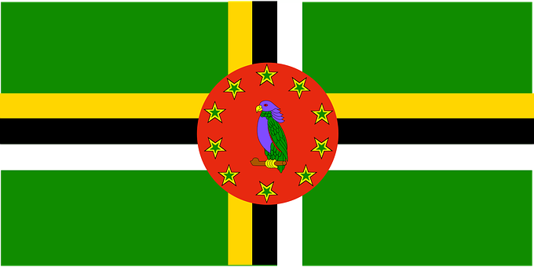
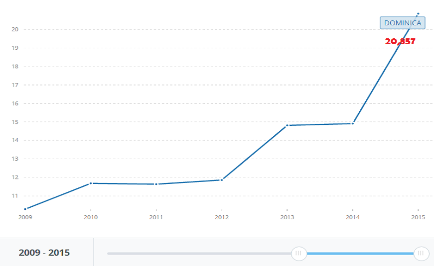
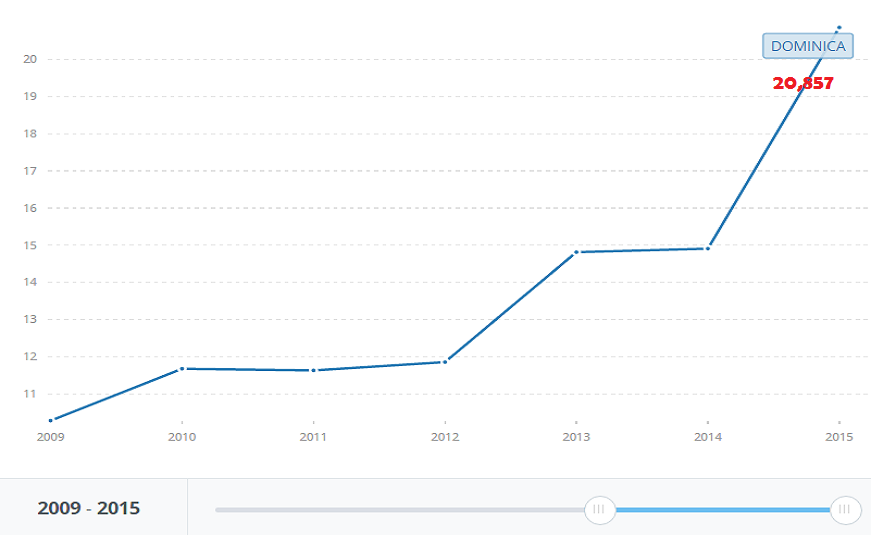
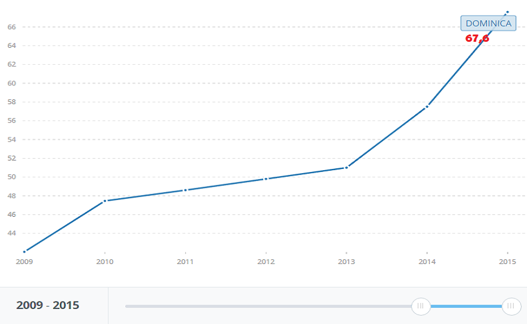
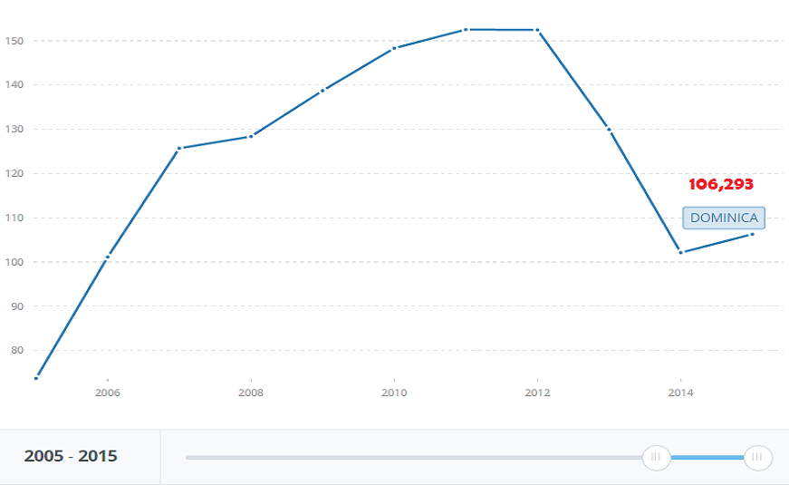
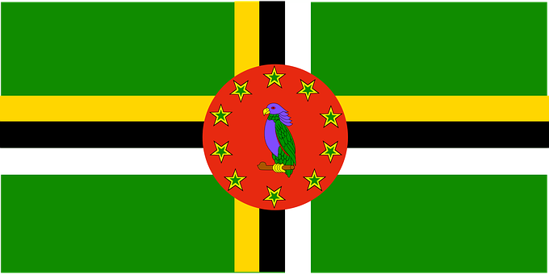
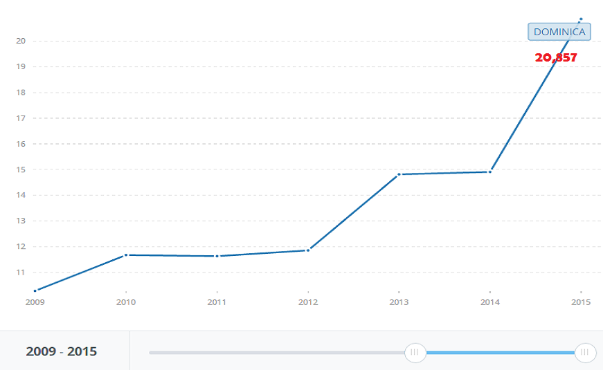
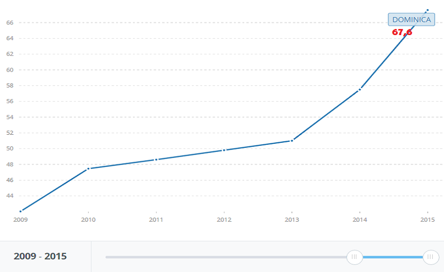
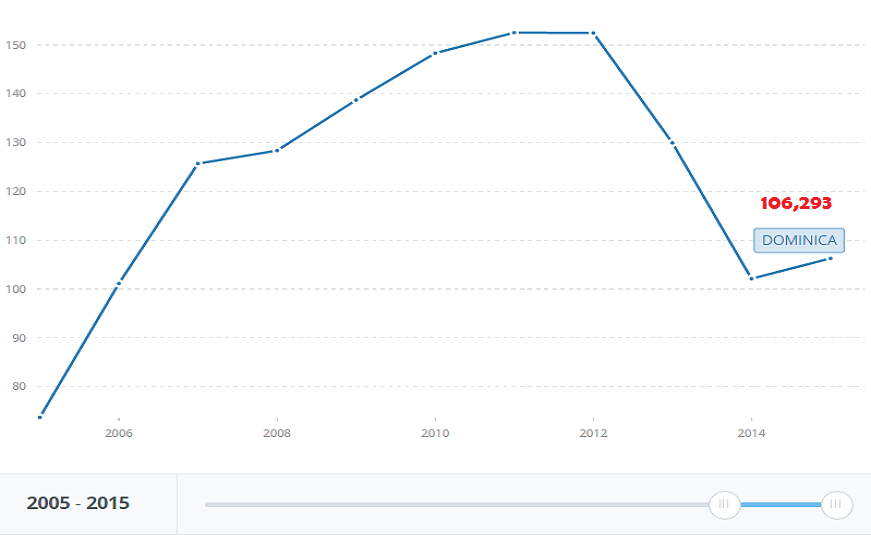

DOMINICA
STATISTICS
TELEPHONE LINES (per 100 people) BROADBAND INTERNET (per 100 people)
 
INTERNET USERS (per 100 people) CELLULAR TELEPHONES (per 100 people)
 Source: Banco Mundial. (2015)
REGULATORY ENTITY


DOMINICA
TELEPHONE LINES (per 100 people) BROADBAND INTERNET (per 100 people)
INTERNET USERS (per 100 people) CELLULAR TELEPHONES (per 100 people)
 Source: Banco Mundial. (2015)